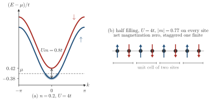
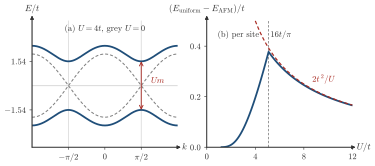
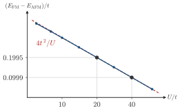

Page 3 of 11 of this session
6.4 Exchange splitting and antiferromagnetic order in numerical mean-field theory
Does the repulsive Hubbard chain order as a ferromagnet or as an antiferromagnet, and which of the two is lower in energy? Let us now see the method of Section 6.3 in a real calculation, first for a ferromagnet away from half filling and then for an antiferromagnet at half filling. At half filling we arrive at an antiferromagnet with a gap, which is below the uniform solution by an energy that falls as \(1/U\) at large \(U\).
\[H = -t\sum_{n,\sigma}\left(c_{n\sigma}^\dagger c_{n+1,\sigma} + \text{h.c.}\right) + U\sum_n c_{n\uparrow}^\dagger c_{n\uparrow}\, c_{n\downarrow}^\dagger c_{n\downarrow}, \tag{6.1}\]
\[m = \langle c_\uparrow^\dagger c_\uparrow\rangle - \langle c_\downarrow^\dagger c_\downarrow\rangle. \tag{6.2}\]
This is the Hubbard chain of Section 6.3, with the hopping \(t\) between first neighbors and the onsite repulsion \(U\) between the two spins of a site. The magnetization \(m\) of one site is the difference between the densities of the two spins.
First we take the one-dimensional chain (6.1) with a unit cell of one site and \(n=0.2\) electrons per site, and we solve it self-consistently. The resulting band structure shows an exchange splitting. The spin-up band, which is occupied up to the chemical potential, is at lower energy than the spin-down band, which is empty at this filling. The splitting between them is called the exchange splitting, and it grows with \(U\). Only spin-up states are occupied, so this is a fully polarized ferromagnetic solution with \(m\neq 0\).
Now we take a unit cell with two sites, and we work at half filling. At \(U=0\) there are two bands, one per site in the cell, and they cross at one point, so the system is metallic. When we turn on \(U>0\) a mean-field gap opens, and in real space the two sublattices get opposite spin polarization, with one site mostly up and its neighbor mostly down. The net magnetization is zero, but the staggered magnetization is not, and this is antiferromagnetic order. As always when a mean-field gap opens, it lowers the total electronic energy with respect to the state without a gap, because the states that the gap pushes down in energy are the occupied ones. The two solutions are drawn in Schematic 6.3.

g2_chain_meanfield.py
filling=0.1 in pyqula, with the momentum \(k\) in units of the inverse lattice constant and the energy measured from the chemical potential \(\mu\). The spin-down band is shifted up by \(Um=0.8t\) and is empty, and the spin-up band is filled up to \(\mu\). (b) The antiferromagnet at half filling, with a moment \(|m|=0.77\) on every site and opposite signs on the two sublattices. The arrows are proportional to the local moment. Look at the bottoms of the two bands in (a), at \(-0.38t\) and \(0.42t\), which are \(Um\) apart.Notebook check-in: session6.ipynb, “(Reminder) Bandstructure of a tight binding chain with two sites” and “(Exercise) Magnetic order driven by interactions in a chain”
Start from the band structure of the two-site chain without interactions, which is the metallic case with a crossing. Then turn on \(U\) and see how the mean-field gap opens and how the spin pattern in real space becomes antiferromagnetic, which reproduces the exchange splitting of (6.2) directly. The ferromagnetic case with one site per cell and \(n=0.2\), which is filling=0.1, is the companion calculation, and it is in the cell “(Exercise) Intermediate coupling regime and Stoner instability”.
6.5 Competition between the ferromagnet and the antiferromagnet
The Hubbard chain (6.1) has two kinds of self-consistent solution at the same filling and the same \(U\). The first is a uniform solution, with one site per cell and without the gap of the doubled cell. Its lowest state is the paramagnet below \(U=16t/\pi\approx5.1t\) and a fully polarized ferromagnet above it, where the spin-up band is full and the spin-down band is empty. The second is an antiferromagnetic solution, with two sites per cell, which is insulating and gapped. Both are real fixed points of the self-consistency loop.
Only one of them can be the true ground state, and we decide which one by comparing total energies. Here the gapped antiferromagnetic solution always has the lower energy. Below \(16t/\pi\) the lowest uniform state is the paramagnet, which has no gap, and opening a gap pushes the occupied single-particle energies down. Above \(16t/\pi\) the lowest uniform state is the saturated ferromagnet, which has the gap \(U-4t\) too. There the antiferromagnet stays lower by about \(2t^2/U\) per site, the energy of the virtual hops that the Pauli principle blocks in the ferromagnet.
Let us follow how large this energy difference is as a function of \(U\). At \(U=0\) the two configurations are the same, so the energy difference is zero. When \(U\) grows from zero the gap opens and the energy difference grows with it. However, when \(U\) keeps growing, the energy difference starts to decrease again, which is not what one would expect. In the limit \(U\to\infty\), which is the same as the limit where the kinetic energy can be neglected, the two configurations become degenerate. Numerically, this energy difference follows a \(1/U\) form. In Section 6.8 we will derive this exact \(1/U\) scaling analytically from a completely independent calculation, which is a real cross-check between the mean-field numerics and a many-body perturbative treatment.
At half filling the chain has a self-consistent antiferromagnetic solution, with the moments \(\pm m\) on the two sites of the cell, and its bands are
\[E_k=\pm\sqrt{\epsilon_k^2+\Big(\frac{Um}{2}\Big)^2},\qquad \epsilon_k=-2t\cos k,\]
with a gap \(Um\) at the Fermi level for every \(U>0\). For \(U\gg t\) it lies below the saturated ferromagnet by
\[E_\text{FM}-E_\text{AFM}\simeq\frac{4t^2}{U}\]
per cell of two sites, which is \(2t^2/U\) per site.
The steps From the gap equation to the 1/U law
We write \(\Delta=Um/2\). Measured from \(U/2\), a spin up sees the onsite energy \(-\Delta\) on one sublattice and \(+\Delta\) on the other, and a spin down sees the opposite. This staggered field couples the states \(k\) and \(k+\pi\), whose energies are \(\epsilon_k\) and \(-\epsilon_k\), and the two-level problem gives the bands \(\pm E_k\) with \(E_k=\sqrt{\epsilon_k^2+\Delta^2}\). The simplest case is \(U=0\), where \(\Delta=0\) and the two bands touch at \(\epsilon_k=0\), so there is no gap.
At half filling the lower band is full. Its state has the weight \(\tfrac12(1+\Delta/E_k)\) on the sublattice where the spin has the lower onsite energy, so the moment is \(m=\langle\Delta/E_k\rangle\). Here \(\langle\cdot\rangle\) is the average over \(|k|<\pi/2\), the zone of the cell of two sites. With \(m=2\Delta/U\) this is the gap equation
\[1=\frac U2\left\langle\frac{1}{E_k}\right\rangle.\]
It has a solution for any \(U>0\), since \(\langle1/|\epsilon_k|\rangle\) diverges at the edges of the zone, where \(\epsilon_k=0\).
For \(U\gg t\) the field is large, \(\Delta\simeq U/2\), and we expand in \(\epsilon_k/\Delta\). The average of \(\epsilon_k^2=4t^2\cos^2k\) is \(2t^2\), so
\[m=\left\langle\frac{\Delta}{E_k}\right\rangle\simeq1-\frac{\langle\epsilon_k^2\rangle}{2\Delta^2}\simeq1-\frac{4t^2}{U^2}.\]
The energy per site has two parts. The kinetic energy of the two spins is
\[-\left\langle\frac{\epsilon_k^2}{E_k}\right\rangle\simeq-\frac{\langle\epsilon_k^2\rangle}{\Delta}\simeq-\frac{4t^2}{U},\]
and the interaction energy is \(U\langle n_\uparrow\rangle\langle n_\downarrow\rangle=U(1-m^2)/4\simeq2t^2/U\). So \(E_\text{AFM}\simeq-2t^2/U\) per site. The saturated ferromagnet has a full spin-up band and an empty spin-down band, so its kinetic energy and its interaction energy are both zero. The difference is \(2t^2/U\) per site, which is \(4t^2/U\) per cell of two sites. At \(U=20t\) the expansion gives \(E_\text{AFM}\simeq-0.1t\) per site, and the gap equation solved numerically gives \(-0.09975t\).

g2_chain_meanfield.py
A gap that the authors identify as a signature of magnetic order is measured in narrow graphene nanoribbons with zigzag edges. The ribbons were cut with a nanofabrication technique based on scanning tunneling microscopy, with well-defined edges. Zigzag ribbons narrower than \(7\) nm show a band gap of about \(0.2\) to \(0.3\) eV, which can be identified as a signature of spin order along the edges, induced by the interaction. When the ribbons get wider, a transition from a semiconductor to a metal appears, which the article reads as the coupling between the two edges switching from antiferromagnetic to ferromagnetic. The measurement is in this article. That this gap plays the role of the gap \(Um\) of the antiferromagnetic chain is our reading, since a ribbon is a strip of the honeycomb lattice with two edges, and not a chain.
Each picture shows mean-field bands of the Hubbard chain at \(U=4t\). The energy \(E\) is measured from the Fermi level, the dashed line. Which picture is the antiferromagnet at half filling?
Show the answers
- A. ✗ False
This is false. These are two copies of the band, \(\epsilon_k\) and \(\epsilon_k+Um\) with \(Um=0.8t\), and only the lower one is partly filled. This is the ferromagnet at \(n=0.2\), and the Fermi level cuts a band, so it is a metal.
- B. ✓ True
This is true. The bands are \(\pm\sqrt{\epsilon_k^2+(Um/2)^2}\), with the gap \(Um=3.08t\) at the Fermi level, since \(|m|=0.77\). The staggered moment opens the gap at \(k=\pm\pi/2\), where the bands of the cell of two sites crossed.
- C. ✗ False
This is false. Here the two bands of the cell of two sites cross at the Fermi level, so there is no gap. This is the paramagnet, with \(m=0\), whose bands are those of \(U=0\).
The half-filled chain orders as an antiferromagnet in mean field. The two sites of its cell have the moments \(\pm m\). Without interaction its band is \(\epsilon_k=-2t\cos k\). Which dispersion does the antiferromagnet have?
Show the answers
- A. ✓ True
This is true. The staggered field \(\pm Um/2\) couples \(k\) and \(k+\pi\), whose energies are \(\epsilon_k\) and \(-\epsilon_k\), and the two-level problem gives this root. At \(U=4t\) the gap at \(\epsilon_k=0\) is \(Um=3.08t\).
- B. ✗ False
This is false. These are two copies of the band in a uniform field, which is a ferromagnet. With \(U=4t\) and \(|m|=0.77\) the lower copy ends at \(0.46t\) and the upper one starts at \(-0.46t\), so they overlap and there is no gap.
- C. ✗ False
This is false. At \(\epsilon_k=0\), which is \(k=\pi/2\), the two branches meet at \(Um/2\), so there is no gap there. The antiferromagnet has its gap \(Um\) at this momentum.
At large \(U\) the half-filled chain has, per cell of two sites,
\[E_\text{FM}-E_\text{AFM}\simeq\frac{4t^2}{U}.\]
What happens to this difference when \(U\) doubles from \(20t\) to \(40t\)?
Show the answers
- A. ✗ False
This is false. With \(4t^2/U\) and \(t=1\) we get \(0.2\) at \(U=20t\) and \(0.1\) at \(U=40t\). Doubling would give \(0.4\) at \(U=40t\), while the two states become degenerate at \(U\to\infty\).
- B. ✓ True
This is true. A \(1/U\) law gives half the value when \(U\) doubles. The law is the exchange coupling \(J=4t^2/U\) of the Hubbard dimer, which is \(0.2t\) at \(U=20t\) and \(0.1t\) at \(U=40t\) for the cell of two sites. A mean-field calculation gives \(0.1995t\) and \(0.0999t\).

Download the pyqula scriptg2_chain_energy_difference.pyThe energy difference \(E_\mathrm{FM}-E_\mathrm{AFM}\) per cell of two sites of the mean-field chain, computed with pyqula, on logarithmic axes, with the line \(4t^2/U\). The two large dots are \(U=20t\) and \(U=40t\). - C. ✗ False
This is false. A division by four needs a \(1/U^2\) law. The product \(U(E_\text{FM}-E_\text{AFM})\) is close to \(4t^2\) at large \(U\), which gives \(0.2t\) and \(0.1t\) for the two values, and not \(0.05t\).
In the saturated ferromagnet of the half-filled chain every site holds one electron with spin up, so \(m=1\). Show that this state is a self-consistent solution of the mean field only for \(U>4t\).
Solution
With \(\langle n_\uparrow\rangle=1\) and \(\langle n_\downarrow\rangle=0\) on every site, the mean field gives the spin-up electrons the onsite energy \(U\langle n_\downarrow\rangle=0\), and the spin-down electrons the onsite energy \(U\langle n_\uparrow\rangle=U\). The two bands are then
\[E_\uparrow(k)=-2t\cos k,\qquad E_\downarrow(k)=-2t\cos k+U,\]
which is an exchange splitting \(Um=U\). The state is self-consistent when the electrons, one per site, fill the whole spin-up band and leave the spin-down band empty. This needs the bottom of the spin-down band above the top of the spin-up band,
\[-2t+U>2t,\]
meaning that \(U>4t\). For \(U<4t\) the two bands overlap, so the lowest states include the bottom of the spin-down band, some electrons go there, and the moment is below one.
In a calculation this is why a mean-field loop started from the field of the saturated state stays there, with \(|m|=1\), at \(U=4.1t\). At \(U=3.9t\) the loop leaves the saturated state. Where it ends depends on mix, the weight of the new mean field in each step, and on maxerror, the change of the mean field below which the loop stops. With mix=0.9 and the default maxerror=1e-5 it stops close to the paramagnet, with \(|m|=0.025\) on a mesh of \(40\) cells and \(0.049\) on a mesh of \(41\) cells, a moment of one or two k-points. This end is an early stop. With a smaller mix, such as \(0.5\), or with maxerror=1e-9, the loop runs longer and reaches the antiferromagnet, which is lower in energy. In these runs its moment ends in the plane \(xy\), so \(|m|\) is read from \(m_x\), \(m_y\) and \(m_z\).
Try it. In the cell, Us runs from 20 to 60. The plot of \(E_\text{FE}-E_\text{AF}\) falls as \(1/U\), and the points of the log-log plot follow a line of slope \(-1\). The product \(U(E_\text{FE}-E_\text{AF})\) is close to \(4t^2\) for the cell of two sites.
- In Section 6.8 the \(1/U\) law of the energy difference is derived from the Hubbard dimer, as the exchange coupling \(J=4t^2/U\).
- In Section 9.5b the competition between the ferromagnet and the antiferromagnet comes back, since nesting makes the antiferromagnetic instability appear at a smaller \(U\) than the uniform one.